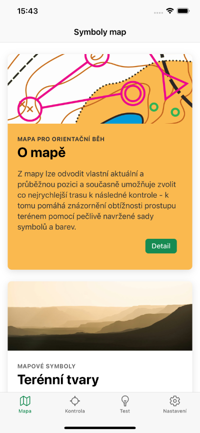
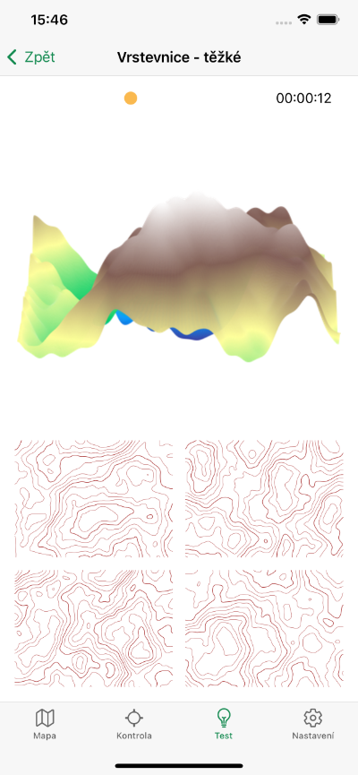
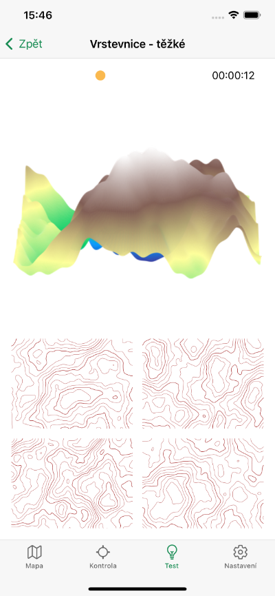
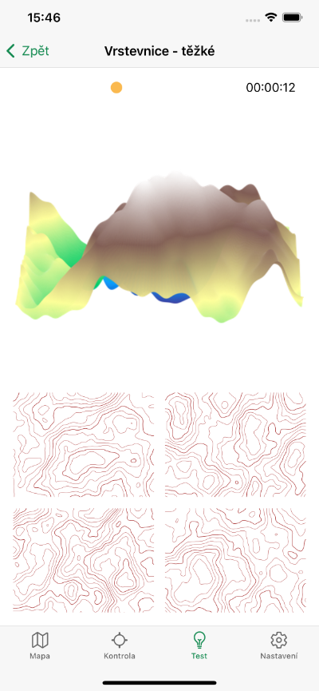

Orisym
Orientujte se s přehledem
Výuka, testování a katalog symbolů pro orientační běh





 


Proč Orisym?
- Naučíte se význam každého symbolu pro orientační běh v detailu
- Při testování svých znalostí zjistíte, jak na tom jste, a vylepšíte je
- V katalogu mapových symbolů a symbolů pro umístění kontrol najdete detailní popis jejich významu
- Objevíte provázanost obou typů symbolů s jejich vazbami
- Zlepšíte svou prostorovou orientaci pomocí rozpoznávání terénu dle vrstevnic
- Pro běh aplikace není zapotřebí internet, pracuje offline